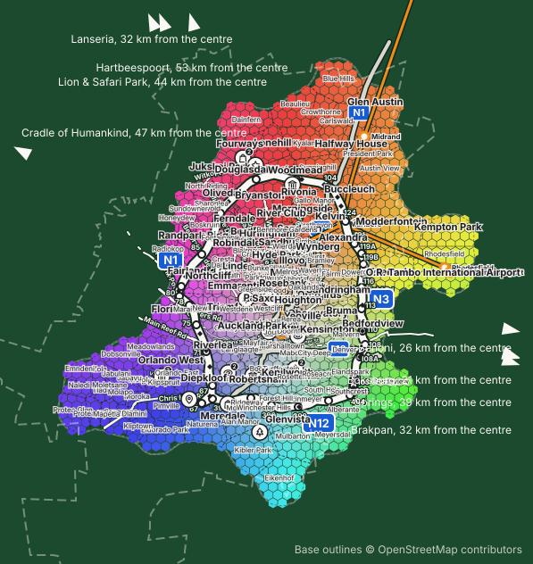
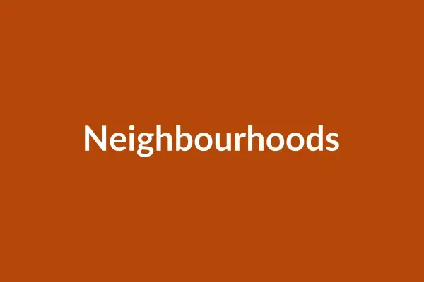

Independent visitor's guide
Visit Johannesburg: A Plain Guide to Joburg
Johannesburg is South Africa's biggest city and the place where much of its modern history was made. This guide shows you what to see, where to stay and eat, and how to get around safely.
Johannesburg at a Glance
- 1,750 mabove sea level, so days are mild and nights can be cool
- 11places to visit in this guide
- 32neighbourhoods worth an afternoon
- 1886the year gold was found on the Witwatersrand and the city began
Map of Johannesburg's Suburbs
Joburg spreads over a wide area, with the ring road of the N1, N3 and N12 round the middle. Pick an area, or tap the map, to raise it and read a short note. The neighbourhoods list has every area in words.
Area Lists

What to See When You Visit Johannesburg
Most visitors come for the history, stay for the food and music, and leave surprised by how green the city is. Here are three ways to spend your time.
Learn the City's History
Start at the Apartheid Museum, then visit Constitution Hill, a former prison that now houses the Constitutional Court. In Soweto, walk down Vilakazi Street, where Nelson Mandela and Desmond Tutu both lived, and stop at the Hector Pieterson Memorial.

Spend an Afternoon in a Neighbourhood
Joburg is a city of distinct areas, each with its own pace. Pick one or two and take your time.
- Braamfontein for its Saturday food market and rooftop bars
- Maboneng for street art, galleries and small shops
- Melville for cafés, bookshops and live music
Get Outside
Johannesburg is often said to have one of the largest planted urban forests in the world. Walk in the Johannesburg Botanical Garden, picnic at Zoo Lake, or climb the Melville Koppies for a view over the northern suburbs. For a full day out, head to the Cradle of Humankind, a UNESCO World Heritage Site about an hour's drive away.
Why Visit Johannesburg
Johannesburg is often a stop on the way to somewhere else. These are the reasons to give it a few days of its own.
History You Can Stand In
The places where South Africa's freedom struggle happened are open to visit, many with guides who lived through it.
Food From Everywhere
Try kota and shisa nyama in Soweto, Ethiopian coffee in the city centre and weekend markets across town.
A Green City
Millions of trees, parks and ridges. In spring, jacarandas turn whole streets purple.
Easy to Reach
O.R. Tambo is one of Africa's busiest airports, and the Gautrain links it to the city in about 15 minutes.
Good Weather All Year
Sunny winters and warm summers with short afternoon storms. Pack a jersey for the evenings.
Music and Art
Jazz, amapiano and theatre most nights, and galleries from the city centre to Rosebank.
How to Plan Your Johannesburg Visit
- Give the city two or three days. Add a day for the Cradle of Humankind or Pretoria.
- Stay somewhere central to the Gautrain, such as Rosebank or Sandton, for an easy first trip.
- Book a guided tour for Soweto and the city centre. Local guides know the stories and the streets.
- Use ride-hailing apps at night, and keep your phone out of sight on the street.
Read the full getting around guide, or follow our first-day plan.
Questions About Visiting Johannesburg
When is the best time to visit Johannesburg?
Any time of year works. Summer (October to March) is warm, with short afternoon thunderstorms. Winter (June to August) is dry and sunny, with cold nights. In October and November, jacaranda trees turn many streets purple.
Which airport serves Johannesburg?
O.R. Tambo International Airport (JNB), about 25 km east of the city centre. The Gautrain runs from the airport to Sandton, and from there to Rosebank and Park Station.
What currency is used in Johannesburg?
The South African rand (ZAR). Cards are widely accepted. Carry a little cash for markets, tips and car guards.
How many days do I need in Johannesburg?
Two or three days covers the main museums, Soweto and one or two neighbourhoods. Add a day for the Cradle of Humankind or Pretoria.
Is Johannesburg safe for visitors?
Most visits pass without trouble if you take sensible care. Use ride-hailing or the Gautrain instead of walking at night, keep phones and bags out of sight, and go with a local guide in areas you do not know.
Do I need a car in Johannesburg?
No. The Gautrain, ride-hailing apps and guided tours cover most of what visitors want to see. A car helps for day trips out of the city.
More answers on the FAQ page.
Get the Joburg Weekend Email
One short email on a Thursday with markets, gigs and events for the weekend. No spam, and you can leave at any time.
Start Planning Your Trip
Pick the places you want to see, check their hours, and plan your days around where you stay.